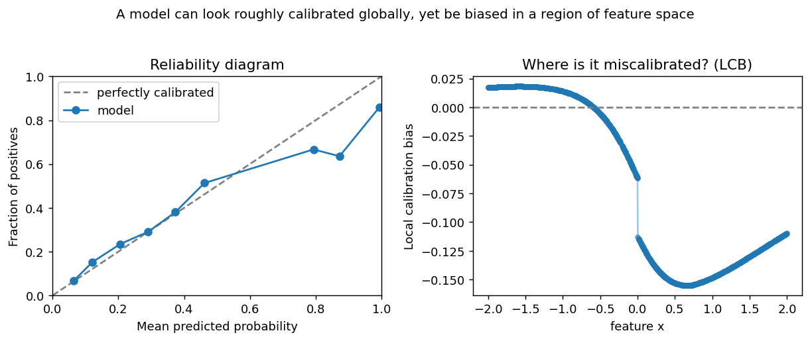

kernel_calibration (KiTE)¶
Kernel-based AI Trustworthiness Examiner. A JAX library to test whether a binary classifier is locally calibrated, to find where it is miscalibrated, and to fix it.
A model can look well calibrated on average and still be systematically wrong for particular regions of feature space — an age band, an income bracket, a demographic group. Standard metrics like ECE average that gap away. Kernel Local Calibration Error (KLCE) measures it, tests it, and localizes it.

The statistic, test, and diagnostic come from Vashistha & Farahi, I-trustworthy
Models: A framework for trustworthiness evaluation of probabilistic classifiers
(AISTATS 2025, arXiv:2501.15617). A classifier is
I-trustworthy if and only if it is locally calibrated — equivalently, if and only
if KLCE² = 0.
Install¶
pip install kernel_calibration # once published to PyPI
pip install "kernel_calibration[viz]" # with plotting helpers
Runs on CPU out of the box. Python 3.9+.
Quickstart¶
import kernel_calibration as kc
# X: features to audit, y: labels, f: model's predicted probabilities
X, y, f = kc.make_calibration_data(n=1000, miscalibration=0.25, seed=0)
prob_w, x_w = kc.select_bandwidths(X, f) # median-heuristic bandwidths
result = kc.KLCE_test(X, y, f, prob_w, iterations=500, key=0, x_kernel_width=x_w)
print(result.statistic, result.pvalue) # small p-value -> not locally calibrated
bias = kc.local_calibration_bias(X, y, f, prob_w, x_w) # where is it miscalibrated?
See the Examples for end-to-end notebooks, including a real-data fairness audit on COMPAS, and the API reference for every function.
Citation¶
@inproceedings{vashistha2025itrustworthy,
title = {I-trustworthy Models. A framework for trustworthiness evaluation of probabilistic classifiers},
author = {Vashistha, Ritwik and Farahi, Arya},
booktitle = {Proceedings of The 28th International Conference on Artificial Intelligence and Statistics},
pages = {4726--4734},
year = {2025},
volume = {258},
publisher = {PMLR},
url = {https://arxiv.org/abs/2501.15617}
}